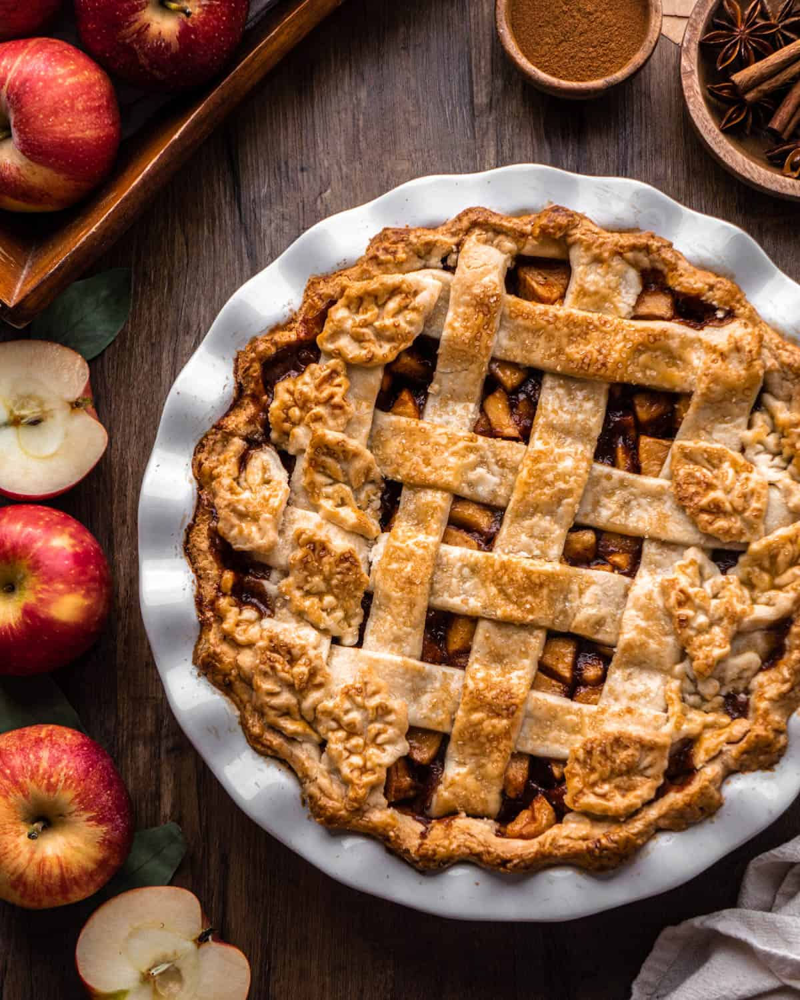

Apple Pie

Description
Apple pie is a timeless dessert featuring a buttery, flaky crust filled with tender, spiced apples
that are baked to golden perfection. Sweet, tart, and warm with hints of cinnamon, this classic treat
is perfect for family gatherings, holidays, or any special occasion, best served with a scoop of
vanilla ice cream.
Ingredients
- Two pre-made pie crusts
- 6 medium apples
- 3/4 cup granulated sugar
- 1/4 cup brown sugar
- 2 tablespoons all-purpose flower
- 1 teaspoon ground cinnamon
- 1/4 teaspoon ground nutmeg
- 1 tablespoon lemon juice
- 2 tablespoons unsalted butter, cut into small pieces
- 1 egg
Steps
- Preheat the Oven
- Prepare the Apples
- Roll Out the Bottom Crust
- Add the Filling
- Add the Top Crust
- Brush with Egg Wash
- Bake the Pie
- Cool the Pie
- Serve